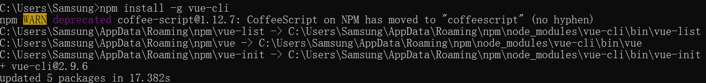
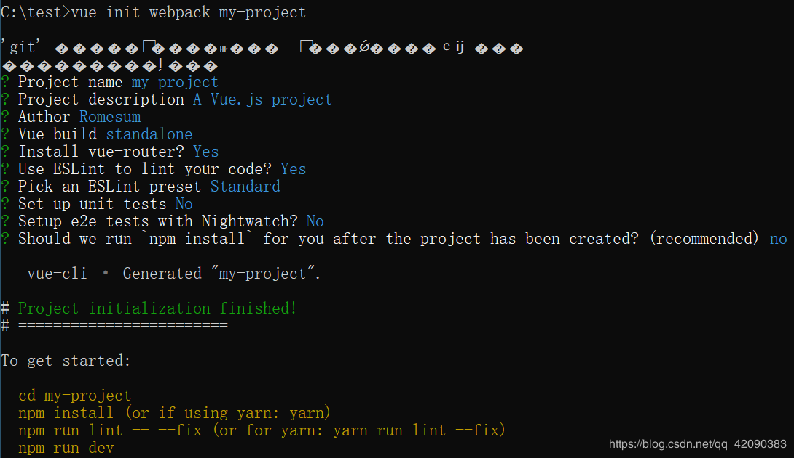
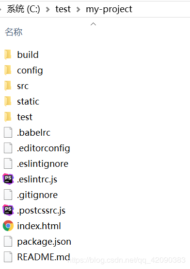
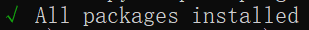
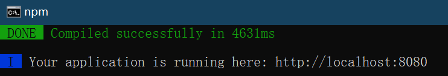
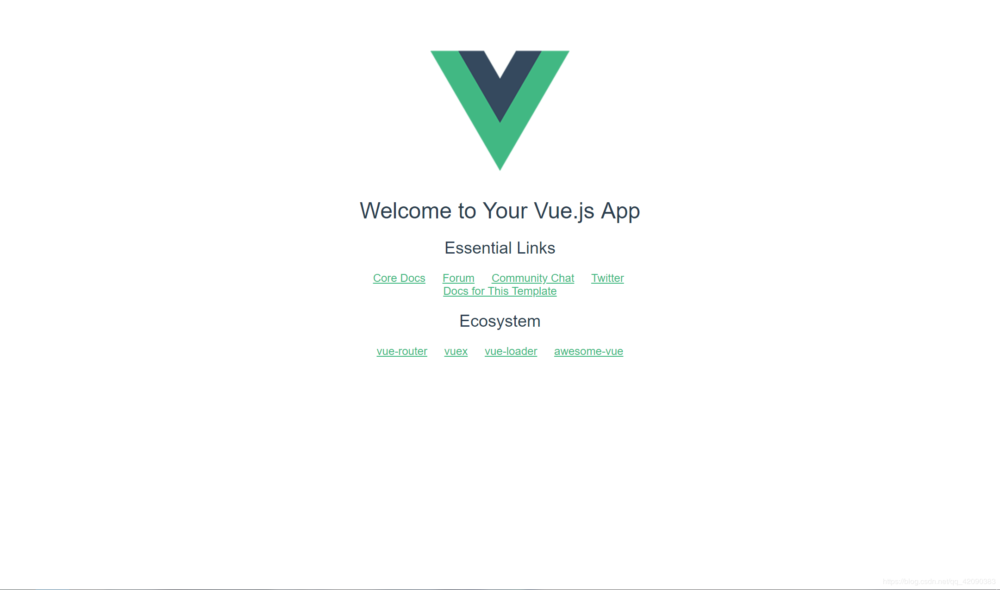

NPM是随同NodeJS一起安装的包管理工具，能解决NodeJS代码部署上的很多问题，本文只介绍如何通过NPM进行安装Vue.js
NodeJS官方网站：http://nodejs.cn/download/
通过官网下载并安装NodeJS即可在cmd执行npm指令
淘宝npm镜像：由于默认使用的是国外的镜像，这会有时候导致下载vue时网速过慢或连接超时，推荐使用淘宝镜像cnpm指令安装，执行以下代码即可。
npm install -g cnpm --registry=https://registry.npm.taobao.org完成淘宝镜像的安装后 ，我们就可以开始安装vue的依赖包了
1.执行以下命令安装vue依赖包
npm install -g vue-cli
执行后结果：

安装后 输入命令 vue -V(必须大写V)查看vue版本号，若出现有版本号信息则安装成功
vue -V2.新建Vue工程目录
先通过cd命令指向要新建项目所在的目录，以下代码通过在C盘根目录下新建一个名为 “test”的文件夹 存放
win10默认存放地址为：C:\User\USER(计算机用户名)
cd C:\
md test
cd test通过以下指令完成工程目录创建
vue init webpack my-project
输入命令后，会询问我们几个简单的选项，我们根据自己的需要进行填写就可以了。
Project name : 项目名称 填写或直接回车
Project description:项目描述 根据自己需求填写 可直接回车
Author：作者名 写个人信息或直接回车跳过
Install vue-router? 安装vue的路由插件 建议选Y
Use ESLint to lint your code? 是否用ESLint来限制代码风格。初学者建议选N
setup unit tests with Karma + Mocha? 是否需要安装单元测试工具Karma+Mocha 建议选Y
Setup e2e tests with Nightwatch?是否安装e2e来进行用户行为模拟测试 建议选N
Should we run `npm install` for you after the project has been created?
是否在创建项目后执行npm install？ 选择NO，由于直接用npm install会调用国外镜像 下载速度可能较慢，文章后面会说到用国内镜像使用npm install，没有安装国内镜像的朋友可以直接使用YES ,use NPM

安装完成后打开目录C:\TEST（或者自己cd的地址上）即可看到项目已经创建完成

3.运行项目
先通过cd my-project（项目名）进入项目目录
cd my-project
使用cnpm install进行安装部署
cnpm install安装部署成功后最后会出现这样一句即完成安装

最后通过npm run dev运行项目
npm run dev
运行后 出现该图即运行成功

测试：
运行command上显示的地址：http://localhost:8080，若出现欢迎使用vue的页面即运行成功
